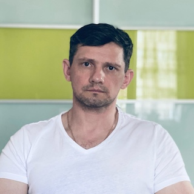

Урок №2
Володимир, 42 роки

Народився і виріс на Донеччині, зараз живу на Київщині.
Спеціальність
якої я
заробляю на
життя пов'язана з будівництвом.
У жовтні 2023 року закінчив навчальний курс "Розробка та просування Web-проектів" у "Комп'ютерній Академії "IT
STEP"
(Кривий Ріг). У рамках Full-stack курсу вивчав наступне:
-
Основи Web - дизайну:
- Концепція веб-сайту. Типи сайтів;
- Створення та обробка брифу та технічного завдання;
- Інформаційна архітектура. Види та моделі;
- Колористика;
- Елементи лендінгу;
- Експорт графіки для інтернету та макетів;
- PhotoShop та Figma.
-
FrontEnd:
- мова верстки HTML та мова стилів CSS;
- мови програмування JavaScript та TypeScript;
- препроцесори SASS та LESS;
- фреймворк Angular або бібліотека React;
- технології DOM, AJAX, REST API, знання про інтернет та веб-технології в цілому;
- навички адаптивної та кросбраузерної верстки в Bootstrap.
-
BackEnd:
- мова PHP;
- веб-сервер Apache;
- інструменти для комфортної взаємодії з БД – MySQL;
- фреймворк Laravel.
-
SEO + CMS Wordpress:
- основи SEO;
- індексація сайту;
- семантичне ядро сайту;
- карта сайту Robots.тхт;
- пошукова оптимозація;
- створення інтернет-магазину WooCommerce;
- створення тегів у WordPress.
Під час навчання підписався на канал
"Фрілансер по
життю" у YouTube, тому що відео-ролики максимально зрозумілі та інформативні. Після закінчення навчання
не було можливості продовжувати розвиватися у сфері IT, і вийшов майже рік перерви.
На курсі "Осінь 2024" я хочу освіжити знання, почерпнути нові та цікаві можливості у сфері IT,
написати
портфоліо та нарешті влаштуватися на роботу!